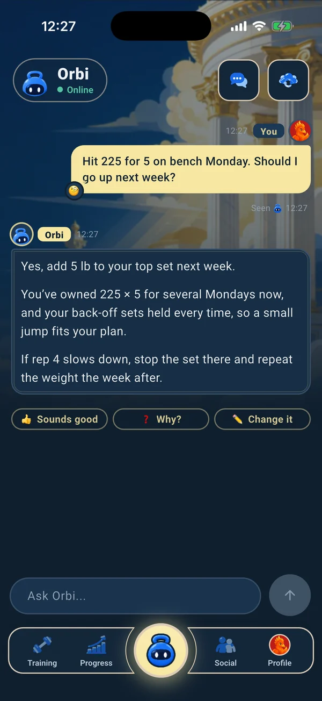
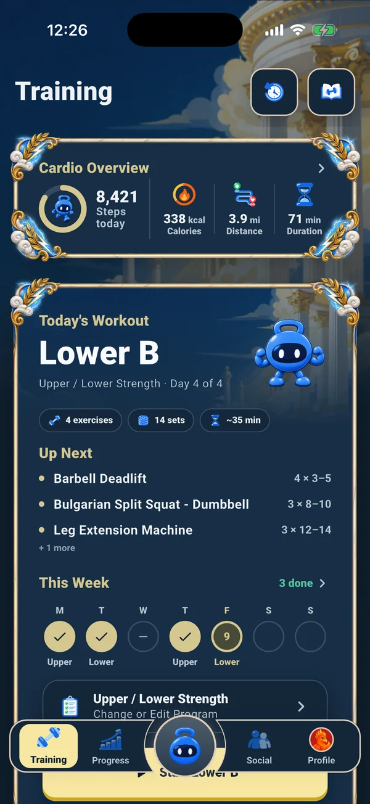
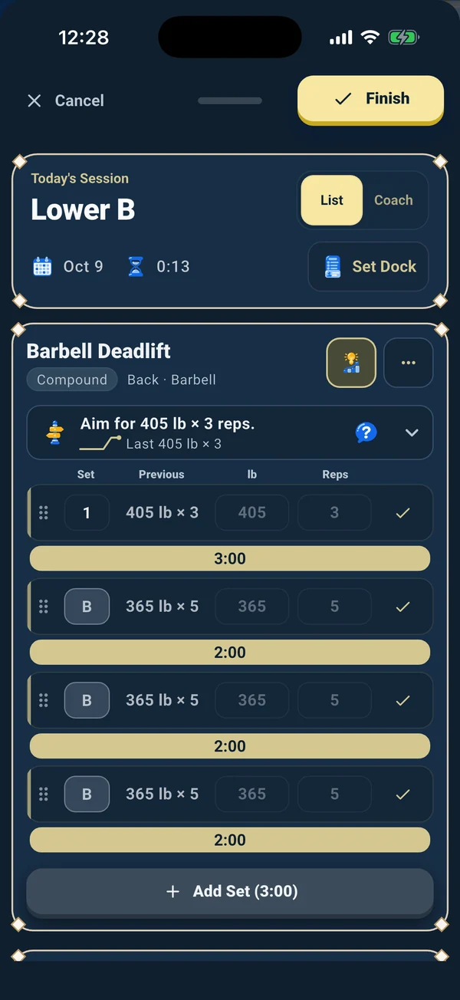
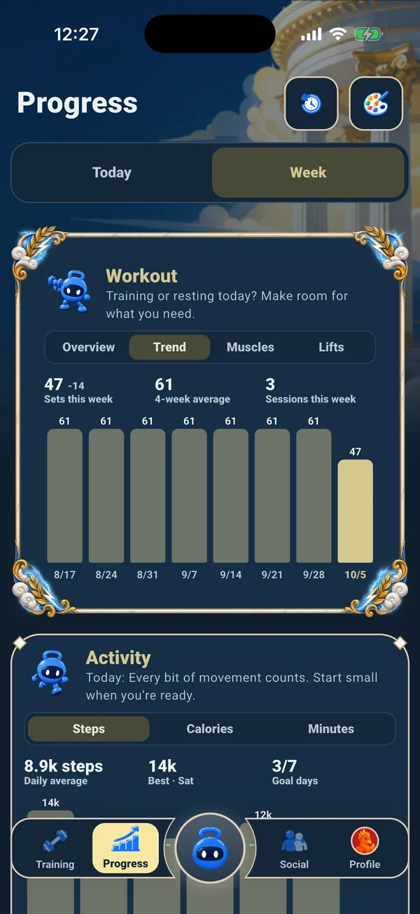
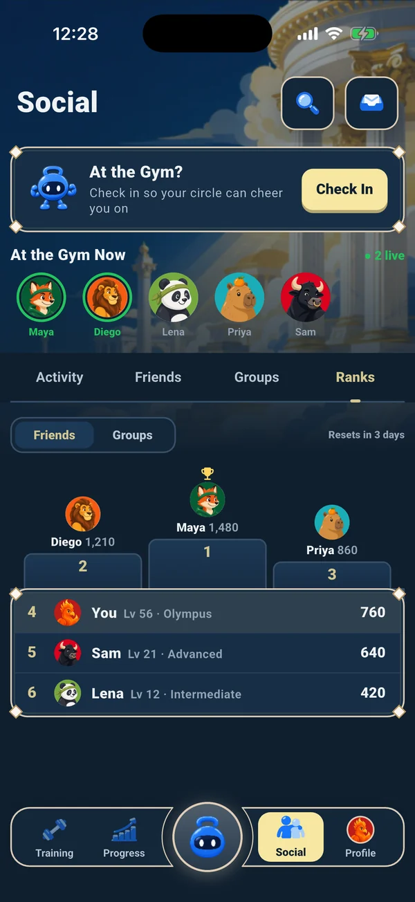
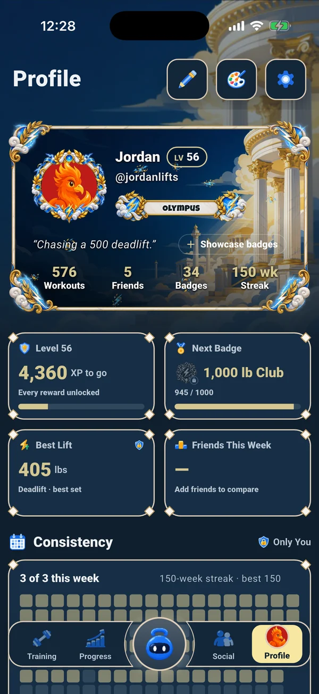

Command center
TypeScript, Node.js and React. A morning brief, deadline reminders and 20+ other scheduled jobs, with a dashboard I can reach from my phone over Tailscale.
Gainesville, FL · open to Summer 2027 SWE internships
I build software end to end and ship it to real users: mobile apps, backends, and the AI systems in between.
> Founder & engineer @ Orbi Labs
01 · Founder & sole engineer · Jan 2026 – now
An AI training coach for powerlifting, bodybuilding, powerbuilding and general fitness, on iOS, Android and the web.
A Claude-powered coach behind a Cloud Function. Everyday chat goes to a fast model and program reviews to a larger one, with prompt caching and per-user and monthly spend caps.
Orbi suggests program changes and the lifter approves them. Deterministic engines compute every load, so a model mistake can't quietly change a workout.
A local SQLite store with 97 versioned migrations for sets, reps, RPE, load, rest and soreness. Firestore holds accounts, friends, groups and the weekly leaderboard.
On-device speech plus a rule-based parser: say "bench 225 for 5 at RPE 8" and the set is logged, with golden-case regression tests.






02 · Personal platform · Sep 2026 – now
My own automation and agent-orchestration platform. It runs 20+ scheduled jobs and coordinates parallel LLM coding agents that ship reviewed pull requests.
TypeScript, Node.js and React. A morning brief, deadline reminders and 20+ other scheduled jobs, with a dashboard I can reach from my phone over Tailscale.
Sweeps 527 Greenhouse, Lever and Ashby boards (3,300+ postings), fetches each one to drop closed or scam listings, and ranks new ones by fit with an LLM.
Heavy builds and test suites run on a WSL2 Linux box over SSH, with a watchdog that health-checks its services every 10 minutes and keeps the laptop free.
03 · Before and beside
Jun 2021 – Aug 2023
Started in high school and built it alone: quests, combat, weather, NPCs and events across 100+ gameplay, UI and server scripts, with session-locked player saves. I made the 3D models too, and ran A/B-tested ad campaigns for launch.
May 2026 – now
Run day-to-day operations for a 450+ member technical club: officer workstreams, weekly workshops, speaker logistics and member communications, including events with speakers from NVIDIA and Microsoft.
Aug 2023 – Dec 2027 (expected)
Herbert Wertheim College of Engineering. GPA 3.67, Dean's List. Data Structures & Algorithms, Algorithm Design, Operating Systems, Database Systems, Computer Networks, Computer Organization.
04 · Say hi
Most interested in backend and data systems: the parts of a product that have to be correct, fast and reliable.